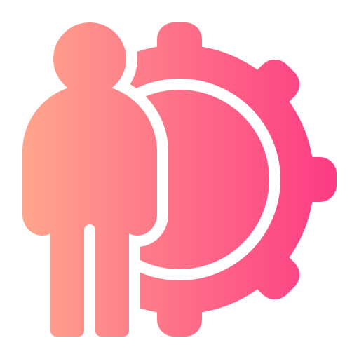

.svg)
Otium
I design digital experiences for people.
I have designed a dedicated free-time management system that offers both tailor-made activities and experiences to share with friends.

The Context
At a Glance

The Challenge
Focusing on the need-finding phase, the project aimed to collect both objective and subjective data regarding the problem through a defined methodology
Reference university courseTarget
Following a comprehensive analysis of the collected data, the results clearly revealed that the highest levels of interest were concentrated within the 18-24 and 25-34 demographics.

The Execution
Employing a systematic methodology centered on needfinding enabled us to generate concepts, subsequently leading to the prototyping and evaluation of the system.
Results & Reflections
Looking Back
This project allowed us to approach data collection in such depth for the very first time. Although complex, this phase was highly engaging, and the strong need for detail provided a solid foundation to justify our choices throughout the entire process
 (1).webp)